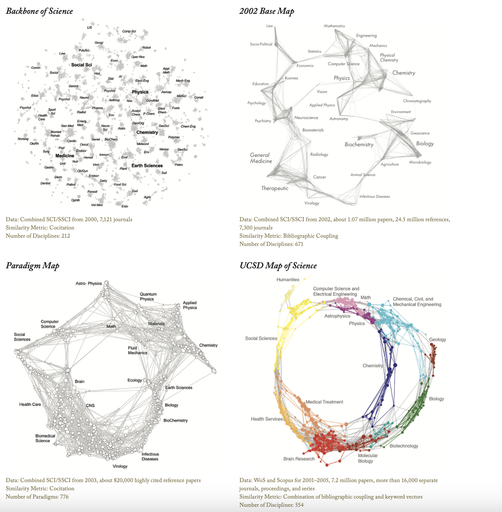

Repository
Arihant Gadgade
Date Published: 3/19/2025
Wikipedia Links
Information ScienceOntology (information science)
Science Maps
The UCSD Map of ScienceThe UCSD Map of Science Journal Article
Atlas of Science
